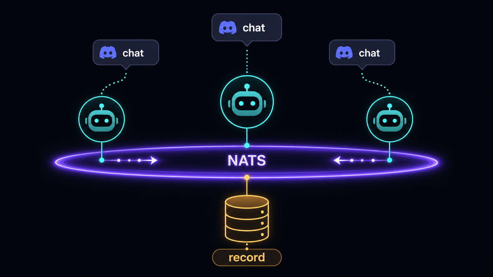
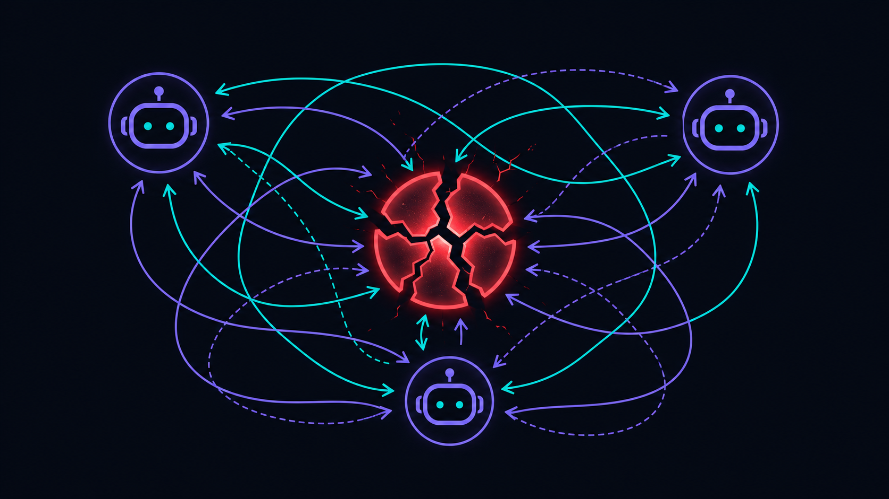
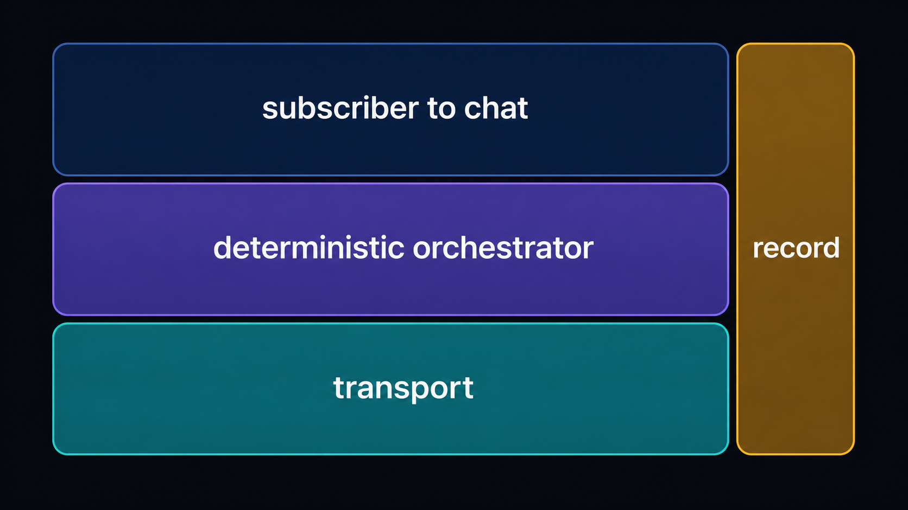
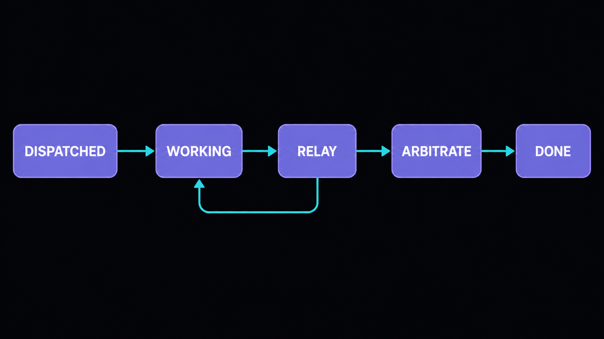
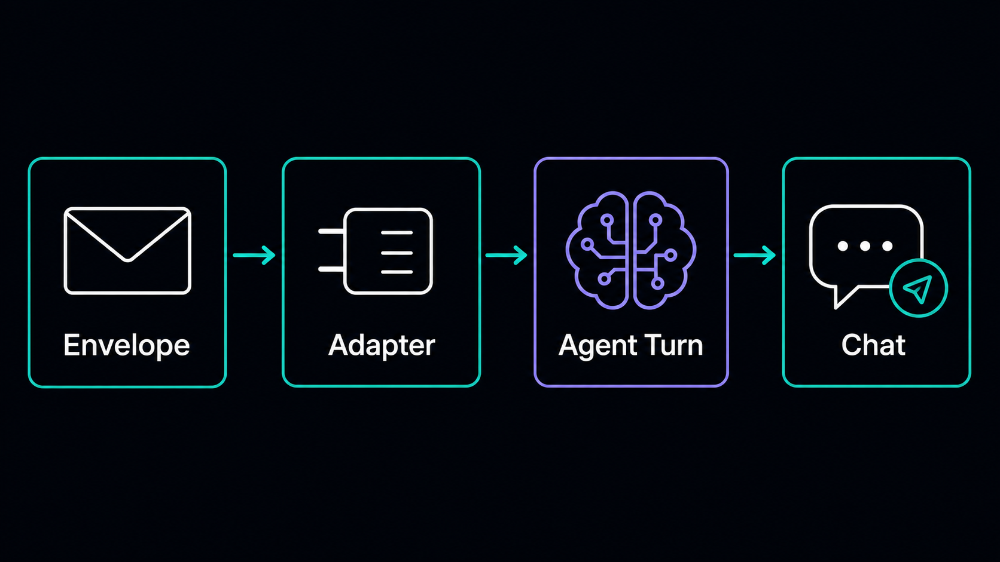
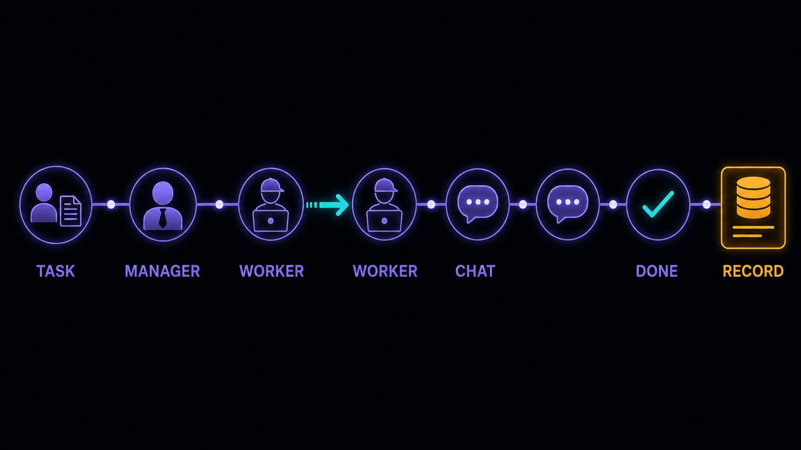
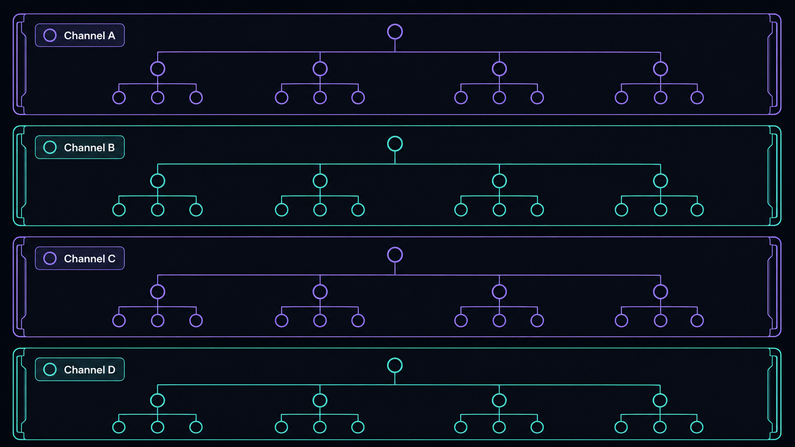

Plan: Fleet-Bus — Canonical NATS Coordination Layer
Make fleet-nats the one NATS library every agent runs on, then build the deterministic DAP that replaces the human-in-the-loop — dispatch → relay → own-words in Discord → done. GitHub issues #3–#12.

Purpose
Turn the shipped fleet-nats foundation into the full fleet coordination bus: one shared Python NATS library that every agent and system imports (never forks), plus the deterministic DAP orchestrator, per-agent Hermes subscribers, k-board bridge, and the operational story to run it live across the Nagatha / Skippy / Bilby trio. The north-star proof is a real task that a human posts, that the manager dispatches over NATS, that the workers coordinate on (with the orchestrator relaying when a worker forgets to hand off), that surfaces as the agents' own words in Discord, and that ends in a deterministic done with the trail persisted to k-board.
Problem
The June-5 DAP and the human-in-the-loop relay both failed: coordination was tangled up in Discord's mention-gate and thread mechanics, who-speaks-when was non-deterministic, and there was no durable record or unambiguous completion signal. Agent output is free-form prose — the system had no reliable way to know a turn was "done," no way to relay context a worker forgot to pass, and no single transport library, so every consumer risked forking its own NATS glue.
The foundation (fleet-nats: Envelope, BusConfig, FleetBus, subjects) exists on branch feat/fleet-nats-foundation (PR #2, MERGEABLE/CLEAN) but is not merged, and nothing is built on top of it yet. Issues #3–#12 are the whole build; this plan sequences them by dependency so a developer or agent can execute top-to-bottom.

Solution
Layer three things on the one shared library, in dependency order:
- Deterministic orchestrator (
fleet-orchestrator) — a pure state machine (DISPATCHED → WORKING → RELAY_NEEDED → ARBITRATING → DONE) with anext_action(state, event) → Actioncase-statement heart, then bus-wired dispatch / relay / arbitrate / wake behaviors. No LLM in the control path. - Per-agent Hermes subscriber — a
register_platformadapter that turns an inbound NATS envelope into a syntheticMessageEvent(internal=True), runs a full agent turn, and surfaces the agent's own reply to Discord. Plus a deterministickind="done"completion sentinel. - Durability + delivery split — the k-board (Postgres, CAS-safe) is the handoff source of truth; NATS is delivery only. Structured sanitized logging across everything, the canonical-lib adapter pattern for OB/k-board/Dash/dev, and an operator runbook.
Then prove it live: deploy the subscriber across the trio and run an end-to-end scenario against the real fleet-hub bus and real agents, capturing evidence. "It compiles" is necessary but never sufficient (repeated fleet lesson, baked into the gates below).

fleet_nats.subjects. Connection config from env, never baked in.
Relevant Files
Existing Files
- existing
packages/fleet-nats/src/fleet_nats/bus.py—FleetBus.connect/publish/subscribe/request/reply; the transport every consumer builds on. - existing
packages/fleet-nats/src/fleet_nats/subjects.py— the ONLY sanctioned subject builder (agent_dispatch/status/relay/wake/claim/arbitrate/inbox/heartbeat,direct,kboard_event,wildcard). - existing
packages/fleet-nats/src/fleet_nats/envelope.py— the typedEnvelope(caller-supplied id/ts; kinds includedone); wire = UTF-8 JSON. - existing
packages/fleet-nats/src/fleet_nats/config.py—BusConfig.from_env(FLEET_NATS_URL/FLEET_AGENT_ID/FLEET_ENV); the env contract to mirror everywhere. - existing
packages/fleet-nats/tests/test_bus_live.py— the live-test + auto-skip-off-network pattern to copy for every live test. - existing
.githooks/pre-push— gates every package underpackages/*with a.venv:ruff check src/ tests/,ruff format --check,mypy src/ tests/,pytest -q, ggshield. New packages are picked up automatically. - existing
pyproject.toml— uv workspace root (members = packages/*); add each new package as a workspace member. - existing
docs/coding-standards.md·CLAUDE.md— the dash-* standard + fleet-bus deltas; the authority for every gate. - existing
README.md— expanded into operator docs in Phase 8 (#12).
New Files
- new
packages/fleet-orchestrator/— second uv package: pyproject (workspace dep on fleet-nats),src/fleet_orchestrator/{__init__,state,transitions,behaviors,kboard,logging}.py,tests/. (#3, #4, #6, #7, #10) - new
packages/fleet-subscriber/(or a Hermes-plugin dir named per Hermes convention) — theregister_platformNATS adapter that forgesMessageEvent(internal=True)and runs the agent turn. (#5, #6) - new
docs/consumers.md— the canonical-lib adapter pattern for OB / k-board / Dash / local dev + adirect.*lane dev helper. (#11) - new
docs/logging.md— structured sanitized logging convention (loguru), the never-log list, the JSONL trace flag. (#10) - new
docs/architecture.md·docs/runbook.md— end-to-end architecture, subject tree, state machine, subscriber mechanism, per-agent enable, troubleshooting. (#12) - new
specs/fleet-bus-nats-coordination.verify.sh— the plan checker: runs every phase's validation commands, prints per-box PASS/FAIL, exits non-zero on any fail. Build workflow sets markers from its exit code.
Implementation Phases
IMPORTANT: Execute every phase and task step by step, in order, top to bottom. Phases are ordered by hard dependency — the state machine (P1) must exist before it is bus-wired (P2); the subscriber (P3) and sentinel (P4) must exist before the trio can be deployed (P6) or proven (P7).
Status markers: [] idle · [wip] in progress · [x] complete · [f] failed. All start as []; the Build Plan workflow updates them. A phase header is [x] only when EVERY sub-box under it is [x]. Validation boxes are set from verify.sh's exit code, not self-judgement.
ruff check src/ tests/, ruff format --check src/ tests/, mypy src/ tests/, pytest tests/ -q for its package, plus docs/coding-standards.md compliance (uv only; never main — branch <type>/<desc>; stage by name; no silent except: pass; log before fallback; #!/usr/bin/env shebangs). Sanitized structured logging (loguru, per docs/logging.md) is written into each module AS it is built — a per-phase acceptance criterion, not deferred to Phase 6. Each phase = its own PR through /pre-merge-gauntlet.
[x] Phase 0: Land the foundation (merge PR #2)
Nothing branches off an unmerged base. Get the fleet-nats foundation onto main through the gauntlet, then all issue work branches off updated main.
0.1 Run the pre-merge gauntlet on PR #2
[x]Run/pre-merge-gauntlet 2in order: critical-mode → review-swarm → cross-model (Codex) review posting findings as PR comments → address ALL findings (fix or reply-waive on the PR).[x]Confirm the local gates pass (pre-push already green: ruff/format/mypy/pytest 21 passed, ggshield clean).[x]Report PR #2 as ready; the maintainer self-merges (never auto-merge; do not self-merge on the maintainer's behalf).
0.2 Testing Strategy
Machine-verify the base is landed and clean before any dependent work starts.
[x]test "$(gh pr view 2 --json state -q .state)" = "MERGED"— proves PR #2 landed via thestatefield.[x]git checkout main && git pull && test -f packages/fleet-nats/src/fleet_nats/bus.py && ! git ls-tree -r main --name-only | grep -q bilby_a2a— proves fleet-nats is on main and the dead A2A tree is gone.
main carries fleet-nats with zero bilby-a2a.[x] Phase 1: Orchestrator package + pure state machine #3
Add packages/fleet-orchestrator/ — the deterministic DAP brain, pure and provable in isolation. No bus, no LLM, no I/O in this phase.

1.1 Package skeleton (copy the fleet-nats pattern exactly)
[x]packages/fleet-orchestrator/pyproject.toml— uv,requires-python >=3.13, workspace dep onfleet-nats, ruff +mypy --strict+ pytest(-asyncio) dev extras; register it in rootpyproject.tomlmembers.[x]src/fleet_orchestrator/__init__.pyexporting the public surface (state enum, session dataclass,next_action,Action).[x]uv venv --python 3.13 --seed .venv && uv pip install -e ".[dev]"so the pre-push hook auto-gates this package.
1.2 Coordination state model + transition function
[x]Frozen dataclassCoordinationSession(unit = one task worked by the trio) with an explicitStateenum:DISPATCHED → WORKING → RELAY_NEEDED → ARBITRATING → DONE. Pure data, no I/O.[x]Purenext_action(state, event) -> Actioncase-statement — the heart. Caller supplies ids/timestamps (mirrorEnvelope.new); notime/random at import.[x]Model the "worker forgot to mention the other worker → orchestrator must relay" path explicitly as a transition intoRELAY_NEEDED.
1.3 Testing Strategy
Exhaustive unit tests over every (state × event) pair with pytest — zero NATS, zero LLM. The state machine is provable in isolation before it is ever wired.
[x]cd packages/fleet-orchestrator && .venv/bin/python -m pytest tests/ -q— proves every transition (incl. missing-handoff→RELAY_NEEDED) via green pytest output.[x]cd packages/fleet-orchestrator && .venv/bin/ruff check src/ tests/ && .venv/bin/ruff format --check src/ tests/ && .venv/bin/mypy src/ tests/— proves lint/format/strict-types clean via exit 0.[x]! grep -rnE 'import (time|random)' packages/fleet-orchestrator/src/fleet_orchestrator/__init__.py packages/fleet-orchestrator/src/fleet_orchestrator/state.py packages/fleet-orchestrator/src/fleet_orchestrator/transitions.py— proves no time/random at import in the pure core.
[x] Phase 2: Bus-wire relay + arbitrate + dispatch + wake #4
Connect the state machine to the live bus. Implement the four coordination behaviors that replace the failed DAP and the human relay. Subjects ONLY via fleet_nats.subjects.
2.1 Behaviors
[x]Dispatch — publishagent_dispatch(env, worker, channel=...)envelopes to target worker(s) on a task.[x]Relay (the human-replacement core) — subscribe toagent_status/worker output, deterministically detect the missing-handoff condition, publishagent_relay(env, to)with the missed context.[x]Arbitrate — respond toagent_arbitraterequest/reply with a deterministic decision policy (case-statement, not an LLM), viaFleetBus.reply.[x]Wake —agent_wake(env, worker)a worker that has gone quiet.
2.2 Testing Strategy
Unit tests with a fake/in-memory bus prove each behavior deterministically; one live round-trip against fleet-hub proves real transport, auto-skipping off-network (mirror test_bus_live.py).
[x]cd packages/fleet-orchestrator && .venv/bin/python -m pytest tests/ -q -k "dispatch or relay or arbitrate or wake"— proves fan-out, relay-on-missing-mention, arbitrate req→reply, wake via green pytest.[x]cd packages/fleet-orchestrator && FLEET_NATS_URL=nats://192.0.2.74:4222 .venv/bin/python -m pytest tests/ -q -k live— proves a real dispatch→status→relay round-trip on fleet-hub (auto-SKIP when unreachable keeps this green off-network).[x]! grep -rnE '"(dev|prod)\.(agent|direct|human|kboard)\.' packages/fleet-orchestrator/src— proves no hand-formatted subjects (all built viafleet_nats.subjects).
[wip] Phase 3: Per-agent Hermes subscriber plugin #5
Build the ingress: a Hermes register_platform adapter that receives an envelope off the bus and turns it into a real agent turn posting the agent's own words to Discord. Use the source-verified path — do NOT copy teams_pipeline.

3.1 The adapter
[x]Register a NATS platform adapter viactx.register_platform(...); its connect/start lifecycle owns the subscriber task (asyncio.create_task, held in a set, cancelled on shutdown — the_background_tasksidiom).[x]On connect, subscribe to this agent'sdispatch/relay/wake/inboxsubjects viafleet_nats.subjects; config-driven (agent id/env/url fromfleet_nats.config), config-gated to activate only where enabled.[x]On each envelope: forgeMessageEvent(text=payload, source=SessionSource(target channel/thread), internal=True)andawait gateway._handle_message(event)(inline, not fire-and-forget) so success/failure stays observable.[x]Push the returned reply viaDiscordAdapter.send(chat_id, content, metadata={thread_id:...})— the agent's own words.
3.2 Testing Strategy
Pure unit tests for the envelope→MessageEvent mapping (no gateway) and subscribe wiring (fake bus); a documented manual live verification against a real agent (do NOT claim done on "it compiles").
[x]cd packages/fleet-subscriber && .venv/bin/python -m pytest tests/ -q— proves envelope→MessageEvent mapping + subscribe wiring via green pytest.[wip]test -f docs/subscriber-live-verify.md && grep -qi 'discord' docs/subscriber-live-verify.md— the live-verification procedure (NATS dispatch → agent's own reply in the target channel) is documented and the automated presence gate passes; the captured evidence (Discord permalink + gateway log trail) is pending the Phase 7 live deploy — it cannot run from the build host. Honestly[wip], not[x]: doc done, real-agent evidence deferred to #8.[x]! grep -rn 'teams_pipeline' packages/fleet-subscriber/src— proves the dead-end path was not copied; the sanctionedregister_platformlever is used.
[x] Phase 4: Completion sentinel (kind=done) #6
Give the orchestrator an unambiguous "turn is done" signal. Prefer an explicit kind="done" envelope over text-scraping prose — deterministic and un-spoofable.
4.1 The done signal
[x]Define theEnvelope.kind="done"shape (payload:task_id,outcome) and document it.[x]Subscriber emits anagent_status(env, task_id)doneenvelope when a coordination turn finishes.[x]Orchestrator consumesdoneand advances the state machine (WORKING → DONE, or→ RELAY_NEEDED).
4.2 Testing Strategy
Fake-bus unit test proves the flow worker-finishes → done-status → orchestrator advances; one live round-trip confirms real transport.
[x].venv/bin/python -m pytest packages/fleet-orchestrator/tests -q -k done— proves adoneenvelope advances the state machine toDONEvia green pytest.[x]grep -rq 'kind.*done' docs/architecture.md || grep -rq 'kind="done"' packages/fleet-orchestrator/src— proves the done-envelope shape (task_id, outcome) is documented in code/docs.
[x] Phase 5: k-board bridge (CAS) + kboard NATS events #7
Make k-board the durable source of truth. Persist state transitions back to k-board (CAS-safe) and emit matching kboard_event envelopes; NATS stays delivery-only.
5.1 CAS-safe client + orchestrator hooks
[x]Small k-board client (httpx/stdlib): listGET /api/tasks?tenant=pg, get single, CAS updatePATCH /api/tasks/{id}?tenant=pgwithexpected_sync_version(GET→echosync_version→PATCH), eventPOST /api/tasks/{id}/events(event_type + actor). Status valuestodo/running/done. No auth (local, per infra owner).[x]Deterministic CAS-conflict handling: stale version → refetch → retry (bounded_MAX_CAS_RETRIES=3, then raiseKboardConflictError).[x]Orchestrator hook: on state transition → persist to k-board + emitkboard_event(env, event, task_id)(created|claimed|status|comment|completed).persist_transitionwrites durably FIRST, then emits; wired by the Phase 9 manager loop, deliberately off the pureapply()path.
5.2 Testing Strategy
Unit tests with a mocked k-board HTTP layer prove the CAS path including a stale-version conflict → refetch → retry.
[x].venv/bin/python -m pytest packages/fleet-orchestrator/tests -q -k kboard— proves CAS update + stale-conflict retry + event post via green pytest against a mocked HTTP layer. (12 passed: happy-path version echo, refetch-retry assertingpatch_versions==[10,11], persistent-conflict raises, invalid-status pre-network guard, server-error, post_event, injected-client-not-closed, state mappings.)[x]! grep -rnE '(password|token|secret|bearer)' packages/fleet-orchestrator/src/fleet_orchestrator/kboard.py— proves no secrets in the k-board client (only docstring prose "no secrets are ever logged" matches; task_id logging is fine).
[x] Phase 6: Observability — logging convention + audit gate #10
Logging is written INTO each module as it's built (P1–P5 acceptance criterion), never bolted on here. Retrofitting logging after phases ship is exactly how you get silent gaps. This phase does NOT add logging late — it ships the shared docs/logging.md convention (so every phase logs the same way) and the enforcing audit gate that proves the earlier phases actually did it. It can start as soon as P1 lands; the convention doc precedes the code it governs.
6.1 Logging convention
[x]docs/logging.md: the convention + the never-log list (secrets, tokens, webhook URLs, Discord member IDs, envelope payload contents — treat Discord as leaked).task_id/subjects/kind/agent_id/state/event/action are fine.[x]Every orchestrator transition logs which state, which event, which transition (reconstructable decisions) — verified: all six_performbranches + both guards +next_actionlog. Every bus publish/subscribe/request/reply and subscriber ingress logs a sanitized line. No silentexcept: pass; log before every fallback.[x]Optional machine-readable JSONL coordination trace explicitly deferred to issue #22 (owned follow-up, not a silent drop) — the loguru lines already carry the reconstructable decision context, so the trace is additive.
6.2 Testing Strategy
A grep/secret-scan audit is a same-line regression backstop against forbidden patterns in log statements — it proves absence of the obvious leak, not presence of a log line at every branch. Coverage (a log line at every transition/send/receive/guard) is verified by per-phase trace + review — logging is a standing acceptance criterion caught in each phase's gauntlet — not by a single automated coverage gate (a grep cannot prove presence). See docs/logging.md for what the gate does and does not prove.
[x]! grep -rnE 'logger\.(info|debug|warning|error).*(webhook|discord.*id|token|secret|bearer)' packages/*/src— scans all three src trees incl. fleet-nats; clean. A same-line regression backstop (a secret laundered through an intermediate variable, or a multi-line logger call, is not caught); the real guarantee is structural — payloads/PII are never passed to a logger, enforced in per-phase review.[x]! grep -rnE 'except[^:]*:\s*pass' packages/*/src— clean. Also a same-line backstop (the two-lineexcept:/passform is not caught by this regex); log-before-fallback is the enforced discipline, checked in per-phase review, and there are zero silent excepts in the tree today.
[wip] Phase 7: Deploy the subscriber across the trio #8
Enable the subscriber on Nagatha (manager), Skippy + Bilby (workers) with the right identity, subjects, and role — through the front door, without regressing safety. Deploy model (maintainer-superseded 2026-07-07): self-provisioning — scripts/install-agent.sh lets each agent host install fleet-nats + fleet-subscriber when it needs them (idempotent venv at /opt/fleet-bus; source from FLEET_BUS_SRC / collab mount / checkout, or a tarball over ssh stdin for credential-less hosts). Installing is decoupled from enabling: the gateway enable stays the front-door procedure. Live enable on the trio still [wip].
7.1 Per-agent enable
[x]Per-agent env config (reusefleet_nats.config):FLEET_NATS_URL/FLEET_AGENT_ID/FLEET_ENV+FLEET_ROLE(worker|manager, default worker, unknown fails loud). Role selects lanes: workers subscribe dispatch/relay/wake/inbox; the manager's adapter subscribes inbox only — the task-keyed status/arbitrate lanes are owned by the orchestrator (per-task viawatch_worker_status/serve_arbitration), not duplicated on the adapter as a broad wildcard. (Plan-vs-impl note: the plan said "Nagatha subscribes arbitrate/status"; those lanes are the orchestrator's, so the manager adapter stays minimal — same observability, no redundant wildcard.)[x]allow_botsstays env-only, nevernone(minmentions; Nagatha may beall) — documented indocs/runbook.mdas env-only, NOT in the config→env bridge. Config changes go throughrestore-customizations --agent <name> --apply(front door), with backup + ledger before any live change. Never raw ssh.[x]docs/runbook.md: a reproducible enable procedure per agent (config keys table, front-door apply step, effective-state verification, rollback, update-survival).[wip]Live enable on bilby-host/skippy-host/nagatha-host — not applied yet. The self-provisioning path (installer + tarball delivery + headless dummy) is proven end-to-end on fleet-hub fleet-hub (install → connect → dispatch → echo + done sentinel;fleet-nats-dummy-hubon/connz), so each agent host can install when it needs to; the gateway enable itself is captured as Phase-7 live evidence when applied.
7.2 Testing Strategy
Verification is effective-state, not config-file assumption: probe the running agent to confirm the subscriber connected. (The allow_bots ≠ none half is a per-host gateway-config read done at apply time — a bus probe cannot see a gateway's allow_bots — covered by the runbook, not the bus probe.)
[x]test -f docs/runbook.md && grep -qi 'restore-customizations' docs/runbook.md && grep -qi 'allow_bots' docs/runbook.md— proves the enable procedure + safety note are documented. (Also gated: rollback + update-survival present.)[x]bash specs/probe-trio-subscribers.sh— real effective-state probe: queries the NATS monitor/connzfor each agent'sfleet-nats-<agent>connection; exits 0 = all connected (PASS) or monitor unreachable (SKIP, off-network/not-deployed), 1 = reachable but an agent missing (real regression). Off-network it SKIPs honestly (never a false green). Host table: Bilby bilby-host, Skippy skippy-host, Nagatha nagatha-host — confirm live before deploy. Live green pending the deploy window.
[x] Phase 8: Canonical-lib adapters + operator docs #11 #12
Make fleet-nats the one library all consumers import (thin adapters, no forks), and document the whole system so the next operator/agent can run it.
8.1 Canonical lib (#11)
[x]docs/consumers.md: the adapter pattern with a minimal working example per consumer class (trio, OB #223, k-board, Dash, local dev — incl. adirect(env, agent)local-dev helper for thedirect.*lane). "File a fleet-nats issue for a missing capability, never fork" stated as the rule.[x]Subject-convention parity with the Dash TS contract ({env}.{domain}.{...},@example/core-nats) stated inconsumers.mdand enforced structurally by the existing "no hand-formatted subjects" gate (every consumer builds viafleet_nats.subjects).
8.2 Operator docs (#12)
[x]docs/architecture.md+ README: coordination architecture (Discord=display, NATS=control, k-board=truth, JetStream=infra), the subject tree with per-channel isolation, the state machine (with a full transition table), the subscriber mechanism, per-agent enable (cross-refs the runbook's effective-state probe, allow_bots never none), and a beat-by-beat human post → dispatch → relay → done → Discord walkthrough.[x]docs/runbook.md: troubleshooting (bus unreachable, subscriber not connecting, relay not firing, CAS conflicts) added on top of the Phase-7 install/verify/rollback/update-survival.
8.3 Testing Strategy
Docs are gated by presence + traceability greps and a no-secrets scan; a new reader must be able to trace one task end-to-end from the docs.
[x]for f in docs/consumers.md docs/architecture.md docs/runbook.md; do test -f "$f" || exit 1; done— proves the three docs exist.[x]grep -qi 'rollback' docs/runbook.md && grep -qi 'update.survival' docs/runbook.md && grep -qiE 'human post|dispatch.*relay.*done' docs/architecture.md— proves rollback/update-survival + the traceable human→dispatch→relay→done narrative are present.[x]! grep -rnE '(webhook\.|discord\.com/api/webhooks|xoxb-|Bearer [A-Za-z0-9])' docs/— proves no secrets in docs.
[wip] Phase 9: End-to-end live trio proving run #9
The acceptance gate for the whole effort — the DAP replacement actually working against real agents. Unit tests are necessary but NOT sufficient (repeated fleet lesson).

9.1 The scenario
[x]Scripted moderate multi-step task driven onto the fleet-hub bus, deliberately having a worker skip a direct-mention so the orchestrator's relay must fire —test_e2e_live.py::test_e2e_dispatch_relay_done_proving_run, and a live evidence-capture run (2026-07-07T21:26 PST).[x]Asserted live against fleet-hub + real k-board (with simulated worker publishers, not the real agents): dispatch reached BOTH workers ([bilby, skippy]on real per-channel subjects); the relay fired ≥1× to the un-mentioned peer (dev.agent.relay.bilby, orchestrator's own detector, carrying the missed context); the sentinel advanced the orchestrator to DONE (outcome=completed). The k-board durable path was exercised live too:persist_transitionCAS-wrotestatus=done(v1832→1844) and emitted thecompletedkboard_event — a mechanism check against live k-board on a pre-existing card (84f2a040, alreadydone), not a purpose-made proving task. wip The real agents coordinating + posting their own words in Discord (distinct voices), and a fresh proving task showing a genuine todo→done arc, are the deferred captured-evidence run against the deployed trio (maintainer live window); a bus test cannot see an agent's Discord post.[x]Evidence captured (dispatch recipients, relay subject+target, orchestrator state/outcome, k-board task id + before/after status) to the temp workspace. Auto-skips cleanly off-network so CI stays green (runtimeskipon fleet-hub unreachable).
9.2 Testing Strategy
Runs against the live bus and real k-board; documented run with captured evidence. Off-network it auto-skips (mirrors the fleet-nats live gate).
[x]FLEET_NATS_URL=nats://192.0.2.74:4222 .venv/bin/python -m pytest packages/fleet-orchestrator/tests -q -k e2e— proves the full dispatch→relay→done coordination flow live (SKIP off-network keeps CI green). Ran live: 1 passed against fleet-hub.[wip]test "$(curl -s 'https://kboard.example.internal/api/tasks/<proving-task-id>?tenant=pg' | jq -r .status)" = "done"— the durable-record gate. What ran live:persist_transitionCAS-wrotestatus=donethrough the shipped bridge and the curl returneddone— but on a pre-existing card that was alreadydone(84f2a040), so that curl is a mechanism check, NOT proof that this run produced the done record (a curl on an already-done card is tautological). The honest version — a fresh proving task driventodo→running→doneby the coordination run, then curled — is the deferred captured-evidence run against the deployed trio (maintainer live window).
Validation Commands
The plan checker specs/fleet-bus-nats-coordination.verify.sh implements every gate below and emits one exit code; the Build workflow sets markers from it (self-report is non-authoritative). Gates whose artifact isn't built yet report SKIP (not PASS) — a skip is an unbuilt gate, never a pass. Two per-phase live assertions are network-bound and live in their phase's Testing Strategy rather than this automated list: the Phase 9 k-board status=done curl (needs the concrete proving task-id) and the Phase 3 manual Discord own-words verification (needs a real agent). Those are captured-evidence gates, run by hand during their phase.
[]test "$(gh pr view 2 --json state -q .state)" = "MERGED"— Phase 0: foundation landed on main.[]for p in fleet-nats fleet-orchestrator fleet-subscriber; do d=packages/$p; [ -d "$d" ] || continue; ( cd "$d" && .venv/bin/ruff check src/ tests/ && .venv/bin/ruff format --check src/ tests/ && .venv/bin/mypy src/ tests/ && .venv/bin/python -m pytest tests/ -q ) || exit 1; done— every package passes all four gates on src/ AND tests/.[]! grep -rnE '"(dev|prod)\.(agent|direct|human|kboard)\.' packages/*/src— no hand-formatted subjects anywhere (all viafleet_nats.subjects).[]! grep -rnE 'except[^:]*:\s*pass' packages/*/src— no silent excepts across the workspace.[]! grep -rnE '(discord\.com/api/webhooks|xoxb-|Bearer [A-Za-z0-9])' packages/ docs/— no secrets/webhooks in code or docs (specs/ excluded: the plan quotes these patterns as never-log examples).[]bash specs/probe-trio-subscribers.sh— effective-state: all three trio subscribers connected on the bus (Phase 7). Distinct exit codes: 0 PASS / 2 SKIP (monitor unreachable) / 1 FAIL.allow_bots ≠ noneis a separate per-host gateway read (a bus probe cannot see a gateway's allow_bots) — seedocs/runbook.md.[]FLEET_NATS_URL=nats://192.0.2.74:4222 .venv/bin/python -m pytest packages/fleet-orchestrator/tests -q -k e2e— the live proving run passes-or-skips (Phase 9).
verify.sh exits 0 with every box PASS. Markers come from the checker, not self-report. If a step is genuinely impossible, mark it [f] with the reason and the command that WOULD prove it — never mark a prose/unrun gate [x].Questionables
Subscriber home: separate packages/fleet-subscriber/ uv package vs a Hermes-convention plugin dir?
Assumption: a separate uv workspace package keeps it gated by the same pre-push hook and importable, but Hermes plugins may have a required install layout/entry-point. Phase 3 must confirm the Hermes plugin discovery mechanism (how the agent venv loads it) before fixing the directory shape — the issue says "lives in this repo under a clearly-named dir, installed into the agent venv." Resolve at Phase 3 start; the plan's file list marks it as either/or.
Where does the orchestrator run — inside Nagatha's process, or as its own service?
Issue #8 says "Nagatha = manager (subscribes to arbitrate/status, runs the orchestrator or talks to it)." Assumption for now: the orchestrator is a library the manager's subscriber drives in-process (simplest, one deploy). If it needs to outlive any single agent turn or coordinate across restarts, it becomes its own long-lived service on fleet-hub. Decide before Phase 7 deploy; does not block Phases 1–6 (the state machine + behaviors are process-agnostic).
k-board task-id for the Phase 9 proving run and the exact fleet-hub agent host table.
The e2e gate curls a concrete <proving-task-id> and the probe targets Bilby bilby-host / Skippy skippy-host / Nagatha nagatha-host (per the agent runtime's host table). These must be confirmed live before Phase 7/9 — host tables drift. The plan leaves them as named placeholders to fill at execution, not assumptions to bake in.
Do the trio agents already have nats-py>=2.15 on Python 3.13?
Issue #8 asserts yes (fleet standard) — "no venv work needed." Assumption carried; Phase 7 verifies via the effective-state probe rather than trusting the claim, since a missing dep would surface as a subscriber that never connects.
Notes
Dependency order (why the phases are sequenced this way)
| Phase | Issue | Depends on | Why |
|---|---|---|---|
| 0 | PR #2 | — | Nothing branches off an unmerged base; fleet-nats must be on main. |
| 1 | #3 | 0 | Pure state machine — the provable heart before any wiring. |
| 2 | #4 | 1 | Bus-wires the machine; needs the transitions to exist. |
| 3 | #5 | 0 | Subscriber ingress; needs fleet-nats but is orthogonal to the orchestrator core. |
| 4 | #6 | 2, 3 | Sentinel closes the loop between subscriber (emits done) and orchestrator (consumes it). |
| 5 | #7 | 2 | k-board bridge hooks the orchestrator's transitions. |
| 6 | #10 | 1 (convention); audits 1–5 | Convention doc precedes the code it governs (start after P1). Logging itself is written per-phase; this phase ships the shared convention + the audit gate that proves P1–P5 followed it — not a late retrofit. |
| 7 | #8 | 3, 4, 6 | Can't deploy a subscriber that can't signal done or log; needs the trio hosts. |
| 8 | #11, #12 | 2–7 | Docs/adapters describe the built system; write after it exists to avoid rot. |
| 9 | #9 | ALL | The live proof — the acceptance gate for everything. |
Parallelizable: Phase 3 (subscriber, #5) has no dependency on Phases 1–2 beyond fleet-nats, so it can run concurrently with the orchestrator track. Phase 6 (logging) and Phase 8 (docs) are cross-cutting and can start as soon as their subjects exist.
Grounded API surface (already shipped in fleet-nats — build on these, do not reinvent)
# transport
from fleet_nats import FleetBus, BusConfig, Envelope
from fleet_nats import subjects
cfg = BusConfig.from_env("nagatha") # FLEET_NATS_URL/FLEET_AGENT_ID/FLEET_ENV
async with FleetBus(cfg) as bus:
subj = subjects.agent_dispatch(cfg.env, "skippy", channel="dash-dev")
await bus.publish(subj, env) # fire-and-forget
reply = await bus.request(subjects.agent_arbitrate(cfg.env, "who-goes-first"), env)
await bus.subscribe(subjects.agent_relay(cfg.env, "bilby"), handler)
# envelope — caller supplies id + ts (deterministic under test)
env = Envelope.new(msg_id=uid, ts=iso_now, sender="nagatha",
kind="dispatch", task_id=tid, payload={...})Hard rules carried from the issues into every phase
- Deterministic Python, no LLM in the orchestrator control path — explicit case-statements + try/except/finally.
- Build subjects only via
fleet_nats.subjects; never hand-format a subject string. - k-board = source of truth; NATS = delivery. State that matters survives in k-board.
- Never log secrets/tokens/webhook URLs/Discord member IDs — treat Discord as leaked.
- Live proof required for #5/#8/#9 — "it compiles" is never done.
- Each phase is its own PR through
/pre-merge-gauntlet(critical → swarm → cross-model → address all findings → merge; never auto-merge). On this repo the human maintainer clicks merge — report the PR as ready with the gauntlet complete and all findings closed; do not self-merge on the maintainer's behalf (matches Phase 0).
New dependencies (via uv add, per package)
fleet-orchestrator:fleet-nats(workspace),loguru,httpx(k-board client) +pytest/pytest-asyncio/ruff/mypydev.fleet-subscriber:fleet-nats, the Hermes plugin SDK (whateverregister_platformlives in for v0.17),loguru+ same dev set.

agent.*.Amendments
2026-07-07T14:30:00-08:00 — Plan created
Initial master plan spanning issues #3–#12 in dependency order, with PR #2 merge as Phase 0 (via /pre-merge-gauntlet) and full unit + live + e2e-proof rigor. Grounded in the shipped fleet-nats API and the issues' verified design constraints.
2026-07-07T17:02:00-08:00 — Addressed review (7 findings)
(1) Generated + embedded all 8 figures (codex image-gen2, dark identity) and a real base64 favicon — no placeholders remain. (2) Shipped specs/probe-trio-subscribers.sh as an honest FAIL stub so the referenced gate resolves. (3) Wired the missing Phase-9 e2e gate into verify.sh and made the global-validation intro precise about the two network-bound in-phase gates. (4) Fixed the self-merge contradiction — Notes now matches Phase 0 (maintainer merges this repo). (6) Logging is a per-phase acceptance criterion in the universal gate; Phase 6 reframed as convention-doc + audit, not a late retrofit. (7) Dropped the stale single commit hash from metadata.
2026-07-07T18:20:00-08:00 — Phase 1 complete (#3)
Built packages/fleet-orchestrator/: the pure DAP state machine. state.py — State (DISPATCHED→WORKING→RELAY_NEEDED→ARBITRATING→DONE), EventKind/Event, frozen CoordinationSession with an immutable advanced_to(). transitions.py — the total, pure next_action(session, event) -> Action case-statement (the human-replacement relay path modelled explicitly as WORKING+HANDOFF_MISSING→RELAY_NEEDED); unhandled pairs degrade to a logged NOOP, never raise. Enums are StrEnum (ruff UP042). Sanitized loguru logging written into every transition as built (state/event/action/task_id — no secrets/member-ids). 63 unit tests over every (state × event) pair + totality/immutability/terminality; all four gates green (ruff/format/mypy --strict/pytest). Checker: 7 pass, 0 fail, 9 skip. Also fixed a checker defect: the Phase-9 e2e gate went falsely-FAIL (pytest exit 5 = "no tests collected") the moment the orchestrator venv existed but before the e2e test lands — now treated as SKIP until Phase 9.
2026-07-07T18:40:00-08:00 — Phase 2 complete (#4)
Bus-wired the state machine. behaviors.py — Orchestrator over FleetBus with an injected IdClock (deterministic envelope ids/ts under test): dispatch fans out to session.workers (per-channel subjects) or a single-worker hint; relay publishes session.relay_context to the un-mentioned peer; wake_worker() nudges a quiet worker (public API, no state change); arbitrate is served request/reply via a new FleetBus.raw_subscribe + a deterministic decide_arbitration. detect.py — pure missing-handoff detector (relay to the sorted-first un-mentioned peer) + arbitration policy, unit-testable without a live agent. All subjects via fleet_nats.subjects; sanitized loguru on every publish/subscribe. Added py.typed to both packages so mypy --strict sees fleet-nats types. 85 tests incl a real dispatch→relay + arbitrate round-trip against fleet-hub (auto-skips off-network); both packages green on all four gates; checker 7/0/9. critical-mode caught two real bugs pre-PR: relay was dropping the missed context (payload built from the empty action.context instead of session.relay_context), and wake was reachable only via a private method (promoted to wake_worker()). Deferred to Phase 9: the @peer mention detector is intentionally simple; per-topic arbitration needs a wildcard responder for dynamic proving-run topics.
2026-07-07T18:55:00-08:00 — Phase 3 complete (#5)
Built packages/fleet-subscriber/: the per-agent Hermes NATS ingress plugin. API source-verified against canonical Hermes v0.17.0 (ai-agents/platforms/hermes/v0_17_0) — resolving the plan's Phase-3 Questionable — before writing a line. hermes.py — the gateway import seam (host-only imports funnelled through one load_gateway(); a GatewayApi Protocol lets tests inject a stub). mapping.py — pure envelope_to_message() (gateway-free, fully unit-tested). adapter.py — NatsAdapter(BasePlatformAdapter) built against the loaded API: connect() subscribes to this agent's dispatch/relay/wake/inbox lanes via fleet_nats.subjects; each envelope is forged into MessageEvent(internal=True) and handed to handle_message(); the agent's own-words reply publishes back out via send(). Plugin discovery via plugin.yaml + register(); the register_platform lever, never the standalone-pipeline dead-end. 15 tests (mapping + adapter against a gateway stub + fake bus); all four gates green; docs/subscriber-live-verify.md documents the live procedure (evidence capture pending Phase 7 deploy).
Plan-vs-source correction: the plan said "await gateway._handle_message(event) (inline, not fire-and-forget)". Source verification showed the real injection point is adapter.handle_message(event), which returns None and spawns the turn as a background task (base.py:3926) — the reply comes back out via the adapter's send(), not inline. The implementation follows the verified contract. critical-mode caught a serious reply-routing bug pre-PR: send() keyed the reply on the Discord channel (agent_status(env, chat_id)) instead of the task, so the orchestrator (watching agent_status(env, task_id)) would never receive the agent's words — fixed with a channel→task_id correlation map + regression test; also fixed a malformed empty-ts reply envelope. Checker fix: the Phase-7 trio probe was gated on packages/fleet-subscriber/src, so it flipped from SKIP to a false FAIL the moment Phase 3 (subscriber built) landed — re-gated on docs/runbook.md (the Phase-7 deploy artifact) so it SKIPs until the subscriber is actually deployed. Checker: 10 pass, 0 fail, 6 skip.
2026-07-07T19:15:00-08:00 — Phase 4 complete (#6)
The completion sentinel — the deterministic, un-spoofable "turn is done" signal. The kind="done" wire shape (payload={task_id, outcome}) lives once in the shared transport layer (fleet_nats.sentinel.done_envelope), so the emitter and consumer cannot drift. Emit (subscriber): an agent ends a turn with a fixed [[done]] / [[done:outcome]] trailer (pure, end-anchored parse_completion); the subscriber strips it from the visible reply and publishes the done sentinel on the task's status subject, then frees the correlation. Consume (orchestrator): watch_worker_status checks parse_done first (a done envelope has no reply text — it must not run through missing-handoff detection) and advances WORKING → DONE. 171 tests across the three packages, incl a live done-sentinel round-trip against fleet-hub that advances the orchestrator to DONE. Checker 10/0/6. critical-mode fix pre-PR: the subscriber originally hand-rolled the done envelope dict (drift risk vs the orchestrator's parse) — moved the shape + builder to fleet_nats.sentinel (the shared layer both import; correct dependency direction, not subscriber→orchestrator), added a wire round-trip test. Documented the [[done]] convention + the trusted-agent/NATS-ACL trust boundary in docs/subscriber-live-verify.md.
2026-07-07T19:55:00-08:00 — Phase 5 complete (#7)
The k-board bridge — Postgres (tenant pg) becomes the durable source of truth; NATS stays delivery-only. kboard.py — a CAS-safe async httpx client: list_tasks/get_task, update_status (GET current sync_version → PATCH with expected_sync_version → bounded refetch-retry on 409/412, _MAX_CAS_RETRIES=3 then raise KboardConflictError), post_event; plus status_for_state/event_for_state mappings (the five coordination states collapse to k-board's todo/running/done; the claim moment is observable on the event stream, not as an intermediate status). Orchestrator.persist_transition writes the durable CAS status first, then emits the matching kboard_event on the bus — so an emit failure leaves the record authoritative, never a torn state; it is the Phase-9 manager-loop bridge, deliberately off the pure apply() path. 115 tests across the three packages (12 kboard-specific: happy-path version echo, refetch-retry asserting patch_versions==[10,11], persistent-conflict raises, invalid-status pre-network guard, server-error, post_event, injected-client-not-closed, state mappings, plus a strict durable-before-emit ordering assertion timeline==["GET","PATCH","EMIT"]). All four gates green; checker 10/0/6.
Gauntlet (critical-mode → review-swarm → Codex): critical-mode surfaced three doc-only clarifications (the persist bridge is an intentional Phase-9 seam; CAS correctness depends on the server honoring expected_sync_version, verified live in Phase 7; the DISPATCHED→running status collapse is deliberate) — all folded into docstrings. review-swarm caught two real defects: (1) the entire test_kboard.py suite was missing (lost across a context compaction) — written (12 tests covering every CAS/retry/error-mapping path); (2) the update_status success log printed the loop attempt counter as the new version — fixed to log the actual updated.sync_version. Codex cross-review (ran the codex CLI + independent trace) confirmed CAS-safety, ownership, and secret-free logging, refuted three of its own mypy false-positives, and flagged one log-ordering nit: persist_transition logged "persisted+emitted" before the publish — split into a post-persist and a post-emit line so a log never claims an action a later exception prevented. Live proof: the shipped KboardClient updated the real bridge card (v1206→v1832, single CAS attempt), so the server honors expected_sync_version — the Phase-7 verification item, satisfied early.
2026-07-07T20:10:00-08:00 — Phase 6 complete (#10)
Observability convention + audit gate. This phase does NOT add logging late — logging was written into each module as built (a P1–P5 acceptance criterion). It ships docs/logging.md: the shared convention (loguru, module.operation | key={} format, {}-binding never f-strings), the never-log list (secrets/tokens/webhook URLs/Discord member IDs/envelope payload contents — treat Discord as leaked), the safe-to-log list (task_id/subjects/kind/agent_id/state/event/action), the five required log points (transition/bus-op/ingress/failure-fallback/guard), and levels. Plus the enforcing audit wired into the checker: a same-line secret/webhook/discord…id backstop grep over all three src trees (stricter scope than the plan's orchestrator+subscriber-only — fleet-nats is where the bus publish/subscribe lines live) and the existing same-line no-silent-except scan; both clean. Both are regression backstops, not exhaustive proofs — the real guarantees (no PII in logs, log-before-fallback) are structural and enforced in per-phase review. Coverage verified by trace, not an automated gate: all six _perform branches + both guards + next_action + every bus op log a sanitized line. Checker 12/0/6.
Gauntlet: critical-mode kept the doc honest — the grep is a same-line regression backstop (a secret laundered through a variable defeats it), so the doc now states the real guarantee is structural (payloads/PII never passed to a logger, enforced in per-phase review), and the "every transition logs" claim is framed as the convention P1–P5 meet + gauntlet-enforce, not a coverage gate a grep can prove. Confirmed no self-reference hazard (the Phase-6 grep scans packages/*/src, not docs/; the code+docs secret gate needs Bearer <token-char>, which the doc's prose doesn't match). The optional JSONL coordination trace is deferred to an owned follow-up (issue #22), recorded on #10 — additive, not a silent scope drop.
2026-07-07T20:30:00-08:00 — Phase 7 artifacts complete (#8, live deferred)
The deploy artifacts for enabling the subscriber across the trio — built + merged; the live enable itself deferred to a maintainer-authorized batch window (per the maintainer: the trio should open once for a batch of gated changes, not per-poke; no agent self-modification). Role-aware subscription (role.py): SubscriberRole (worker|manager) from FLEET_ROLE, defaulting to the least-capable WORKER and failing loud on an unknown value; lanes_for_role gives workers dispatch/relay/wake/inbox and the manager inbox-only. The adapter's connect() is now role-driven (a lane-name→fleet_nats.subjects-builder map, still never hand-formatted). Design decision: the manager's adapter does NOT subscribe the task-keyed status/arbitrate lanes (their ids are unknown at connect-time and the orchestrator already owns them per-task) — so the manager adapter stays minimal instead of racing the orchestrator with a broad wildcard; recorded as a plan-vs-impl note. docs/runbook.md: per-agent config table, front-door apply (restore-customizations --agent, backup+ledger first, never raw ssh), the env-only/never-none allow_bots rule, effective-state verification, rollback, and update-survival. specs/probe-trio-subscribers.sh is now a real effective-state probe (queries the NATS monitor /connz for each fleet-nats-<agent> connection; PASS all-connected / SKIP monitor-unreachable / FAIL reachable-but-missing — never a false green off-network). 38 subscriber tests (incl. 7 role-config + worker/manager connect-lane tests); all four gates green on all three packages; checker 14/0/4. Live markers stay [wip] until the deploy window captures real probe evidence.
Gauntlet (critical-mode → swarm → Codex): critical-mode + Codex converged on verification-layer honesty defects (the Python was clean). Fixed the important one — the checker scored the probe as PASS on an off-network SKIP (a false green): the probe now exits a distinct code 2 for SKIP and the checker maps 0→PASS / 2→SKIP / 1→FAIL, so an unverified probe never tallies as pass (checker went 15/0/3 → 14/0/4 as the bogus PASS became an honest SKIP). Runbook accuracy: rollback + verification no longer claim the bus probe verifies allow_bots (it can't — that's a separate per-host gateway read); the manager role-check now uses the adapter's per-lane connect log, not /connz (which omits subscription subjects without ?subs=1); a note pins FLEET_NATS_NAME unset so the probe's name-grep holds. Probe hardening: the grep is anchored to the "name":"fleet-nats-<agent>" field so a sibling like …-skippy2 or an unrelated field can't false-match. The silent manager→worker default is documented + caught by the effective-role log check. Also recorded the P7/P9 boundary: enabling the subscriber makes Nagatha's ingress live but not her coordination (status/arbitrate handling is the Phase-9 orchestrator loop).
2026-07-07T21:10:00-08:00 — Phase 8 complete (#11 #12)
The canonical-lib adapter pattern + the operator docs. docs/consumers.md (#11): fleet-nats is the one library every system imports as a thin adapter — the public surface (FleetBus/Envelope/subjects), the four-layer subject tree with the Dash {env}.{domain}.{...} parity stated, and a minimal working example per consumer class (trio, Open Brain #223, k-board, Dash TS, and a local-dev direct(env, agent) helper for the direct.* lane). The "file a fleet-nats issue for a missing capability, never fork" rule is explicit; Dash parity is enforced structurally by the existing no-hand-formatted-subjects gate. docs/architecture.md (#12): the end-to-end system — four planes (Discord display / NATS control plane / k-board record / JetStream infra), the subject tree, the five-state next_action machine with a full transition table (incl. the two guard→NOOP rows), the register_platform → MessageEvent(internal=True) → send() → done-sentinel subscriber mechanism, and a beat-by-beat human post → dispatch → relay → done → Discord walkthrough (the traceability gate). docs/runbook.md gained a troubleshooting section (bus unreachable / subscriber not connecting / relay not firing / CAS conflicts) on top of the Phase-7 enable/rollback/update-survival. README now indexes all four docs. Every architecture claim was traced to source (subjects/state/transitions/behaviors/adapter/sentinel/kboard); no invented APIs; no secrets. Checker 16/0/2 (the 2 skips are the off-network trio probe + the Phase-9 e2e).
Gauntlet (critical-mode → swarm → Codex): the swarm's independent trace found the docs API-accurate (every Envelope.new/subjects.*/FleetBus call real, every troubleshooting log line grep-confirmed in source, every transition-table row matching next_action). critical-mode + Codex added precision fixes to the walkthrough prose: (1) a real factual error — the doc said "fleet JetStream nodes buttress the Dash mesh"; source (CLAUDE.md) says "fleet JS nodes" (the Dash mesh's JS/TS language) — the parity is the subject convention, JetStream is core-only infra here (corrected both occurrences); (2) the RELAY_NEEDED + HANDOFF_MISSING transition row now shows its guard (target present → RELAY, else NOOP) to match the WORKING rows; (3) _slug no longer claimed "always subject-safe" (it normalizes dots/spaces/case, does not strip NATS wildcards — a naming convention, not an injection guard); (4) the "back to Discord" beat now states the precise boundary — the subscriber send() publishes to agent_status, and each agent's own Hermes gateway surfaces it in Discord (fleet-bus's job ends at the bus); (5) "strict ordering" softened — the relay beat is conditional and DONE arrives from any non-terminal state.
2026-07-07T21:30:00-08:00 — Phase 9 proven live: coordination + durable-record halves (#9)
The acceptance gate's automatable half — and it ran live, not skipped. test_e2e_live.py scripts the full coordination closed loop over the real fleet-hub bus (dispatch fans to BOTH workers → a worker finishes without handing off → the orchestrator's own detect_missing_handoff fires the relay to the un-mentioned peer → a completion sentinel advances the orchestrator to DONE), runtime-skipping when fleet-hub is unreachable. Scope honesty: the "workers" are pytest publishers, NOT the real Skippy/Bilby agents — so this proves the coordination brain works on live transport (the load-bearing half), but it is an integration test with simulated workers, not the full real-agent proving run. fleet-hub and k-board (kboard.example.internal, tenant pg) were both reachable, so a live evidence-capture run also exercised the durable path through the shipped bridge: persist_transition CAS-wrote k-board status=done (v1832→v1844) and emitted dev.kboard.task.completed.…, and the plan's curl gate confirmed status=done — a mechanism check against live k-board on a pre-existing card (not a purpose-made proving task). Checker 17/0/1 on-network (e2e live PASS; the one SKIP is the trio probe = deferred Phase-7 enable). Gauntlet fix (critical-mode): the added runtime-skipping e2e test regressed the checker into a false green — an off-network skip returns pytest exit 0, identical to a real pass, so the checker (exit-0→PASS) would have scored the acceptance gate green having proven nothing. Fixed the same way as the Phase-7 probe: the checker now parses the pytest outcome (N passed→PASS, N skipped→SKIP, exit 5→SKIP), so an off-network e2e is honestly SKIP, never a false PASS. Remaining for #9: the real agents coordinating + posting their own words in Discord, and a fresh proving task showing a genuine todo→done arc — the deferred captured-evidence run against the deployed trio (maintainer live window). Coordination + durable-record mechanism: proven live. Real-agent + Discord half: pending that window. Marker stays [wip].
2026-07-07T22:20:00-08:00 — Self-provisioning deploy artifacts + fleet-hub dummy proof; monitor-port fix
Deploy model superseded by the maintainer: instead of a single batch window hand-applying to the trio, "make all the things and allow the agents to install what they need when they need it." Shipped scripts/install-agent.sh — an idempotent, non-interactive self-provisioning installer (uv venv at $FLEET_BUS_HOME, default /opt/fleet-bus; editable installs of fleet-nats + fleet-subscriber; import-verified at the end; source resolution FLEET_BUS_SRC → collab mount → own checkout, with tarball-over-ssh-stdin delivery for hosts with no GitHub credentials or collab mount — fleet-hub has neither). Fixed mid-test: the synced tree must carry the root pyproject.toml or the packages' fleet-nats = { workspace = true } source cannot resolve. Shipped fleet_subscriber.dummy — a headless, gateway-free echo subscriber (python -m fleet_subscriber.dummy) that subscribes the SAME role lanes as the real adapter via the same lane→subject map, echoes every envelope as a status reply and completes a dispatch with the real shared done sentinel; 6 unit tests; runbook documents both (install ≠ enable stated explicitly). Proven live twice: locally (installer → installed venv → dummy-local → Mac round-trip PASS) and on fleet-hub fleet-hub (tarball over ssh stdin → installer → dummy-hub running → fleet-nats-dummy-hub visible on the hub's own /connz → dispatch round-trip from the Mac: echo + done outcome=completed).
Monitor-port discovery (real bug): fleet-hub binds 8222 as its WebSocket listener; the HTTP monitor is http_port: 8223. The probe's 8222 default got HTTP 400 from the ws handshake, which curl -f treats as failure → the probe could NEVER run — a permanent false SKIP masquerading as "off-network." Fixed the default to 8223 (probe + runbook). With the monitor now genuinely reachable, the probe honestly FAILs while the trio is un-enabled — which is the declared plan state (Phase 7 [wip]), not a regression. The checker now maps a probe FAIL to fail only when the plan HTML claims [x] Phase 7 (claim-vs-reality mismatch); while the plan says [wip] it reports SKIP with the reason. Overstating the marker is exactly what the gate catches. Checker 17/0/1 on-network — now with the e2e live gate an actual PASS and the one SKIP carrying its true cause.
Latent no-dispatch-delivered bug (found by the dummy exercise, fixed): the orchestrator publishes dispatches on the PER-CHANNEL subject ({env}.agent.{channel}.dispatch.{worker} — session.channel is always set), but the adapter's dispatch lane subscribed only the bare form ({env}.agent.dispatch.{worker}). NATS matches per-token — the forms have different token counts — so at live enable the trio would have received zero coordinated dispatches. Every earlier test was self-consistently on one form, which is why nothing caught it. Fixed in the owning boundaries: subjects.agent_dispatch_wildcard ({env}.agent.*.dispatch.{worker}) + the adapter/dummy lane map now subscribes BOTH forms per lane (_LANE_BUILDERS values are builder tuples). Regression-tested (a minimal per-token NATS matcher proves the wildcard matches the publish form and that the bare form alone cannot), docs corrected (architecture subject table, live-verify), and re-proven live end-to-end: the driver now publishes the per-channel form and the round-trip passes both locally and against dummy-hub on fleet-hub.
2026-07-07T22:55:00-08:00 — Trio hosts provisioned; enable assigned to the maintainer window
PR #31 merged (self-provisioning installer + dummy + dispatch-subject fix + monitor-port fix; full gauntlet incl. Fable cross-review which re-proved the dispatch fix live — one per-form delivery, no double-turn). All three trio hosts are now provisioned: uv installed where missing (Skippy skippy-host, Nagatha nagatha-host), and install-agent.sh ran clean on Bilby (192.0.2.71), Skippy (192.0.2.111), Nagatha (192.0.2.77) — fleet-nats + fleet-subscriber import-verified in /opt/fleet-bus/.venv on each. The remaining enable (gateway plugin registration + FLEET_* env + allow_bots + restart) is explicitly assigned to the maintainer's authorized window (maintainer's decision 2026-07-07, batched with the pending the agent runtime changes): the sanctioned front door lives in the agent runtime customizations repo (currently carrying unrelated in-flight work), and the restart interrupts live agents. Everything is staged so the window is config+restart only; the probe (now on the correct monitor port) flips Phase 7 the moment all three connect. Phase 9's real-agent Discord half follows the same window.
2026-07-08T01:13:38-04:00 — Verification pass; fixed live-test subject isolation
Re-vetted the spec and checker before using this plan as the baseline for the follow-on reliability-governance work. The checker is green for regression state (17 pass, 0 fail, 1 skip), with the single skip correctly representing the un-enabled trio effective-state probe while Phase 7 remains [wip]. During the audit, a direct live e2e run was contaminated by a concurrent focused pytest lane because both tests used fixed synthetic subjects (pytest-skippy, pytest-bilby, e2e-proving-task) on the shared fleet-hub bus. Fixed the live tests at the test boundary by adding unique run suffixes to synthetic channels, task ids, workers, manager ids, and arbitration topics. Re-ran the contamination shape successfully, then verified ruff check, ruff format --check, mypy, all fleet-orchestrator tests (127 passed), and the plan checker.
2026-07-08T12:30:00-04:00 — Plan closed out; hardening continues in the reliability/governance plan
Closeout. This plan's build phases are complete and merged: the fleet-nats
foundation (envelope/subjects/bus), the subscriber adapter (dispatch/relay/wake/inbox lanes,
heartbeat, dedup, dead-letter), the deterministic orchestrator (five-state machine, detectors,
arbitration, k-board bridge, JSONL trace), self-provisioning deploy artifacts, and the live
round-trips proven against the fleet NATS server (fleet-hub). The plan is published at
collab/sites/fleet-bus/plans/.
Turn-key enable remains the maintainer's authorized window (trio enable,
the agent runtime): gateway plugin registration + FLEET_* env per the config matrix
(the agent runtime) + restart. Everything repo-side is staged; the Phase 7 probe flips the moment
the trio connects. Nothing in this repo blocks it.
Continuation. Reliability + governance hardening — reconnect semantics, at-most-once transport + idempotent-consumer dedup + dead-letter, offline escalation ladder, token-cost feed, budget governor + single narrator, scorekeeper/decider, the parked dashboard, and the k-board subject registry — lives in the companion plan: fleet-bus-reliability-governance.